Independent project · Fall 2025
Small Bitty Tech Items Organizer
A five-slot organizer for USB receivers and memory cards, with tactile feedback and swappable labels.
I designed and printed the housing, slot geometry, and magnetic labels. The prototype confirmed the click interaction, and keeping items secure when inverted remained open.
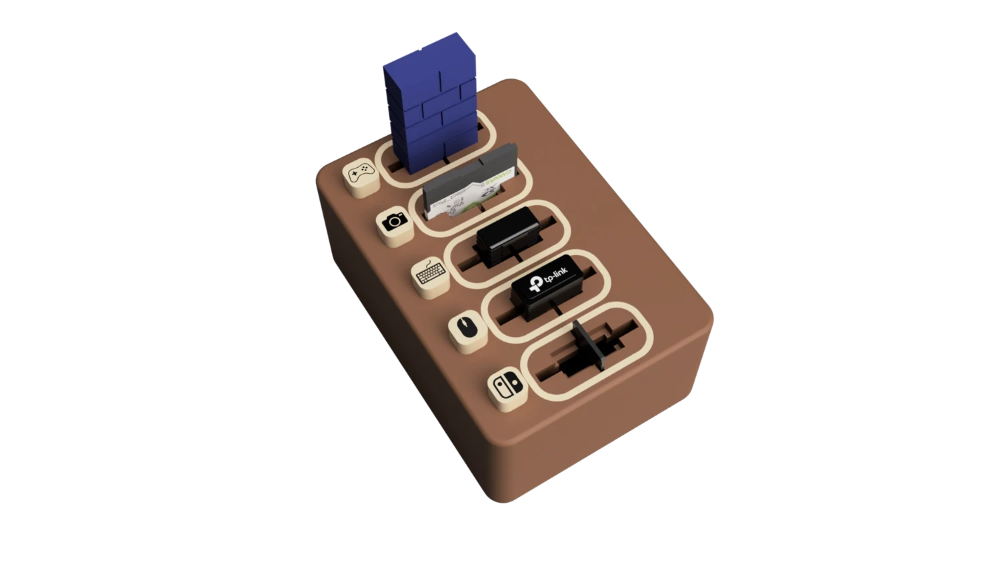
01 / The problem
A bag stores things. It still leaves you digging.
I kept losing track of small accessories in bags. Even when I found a receiver, it was hard to tell what it belonged to. I wanted a visible place for each item and a satisfying cue when I put it away.
02 / The interaction
A click when it goes in. An icon to find it again.
The slot fit the USB receiver, SD card, and microSD card examples I tested. Inserting an item presses the clicker directly beneath it. The separate magnetic icon tells you what’s in the slot and can be swapped as needed.
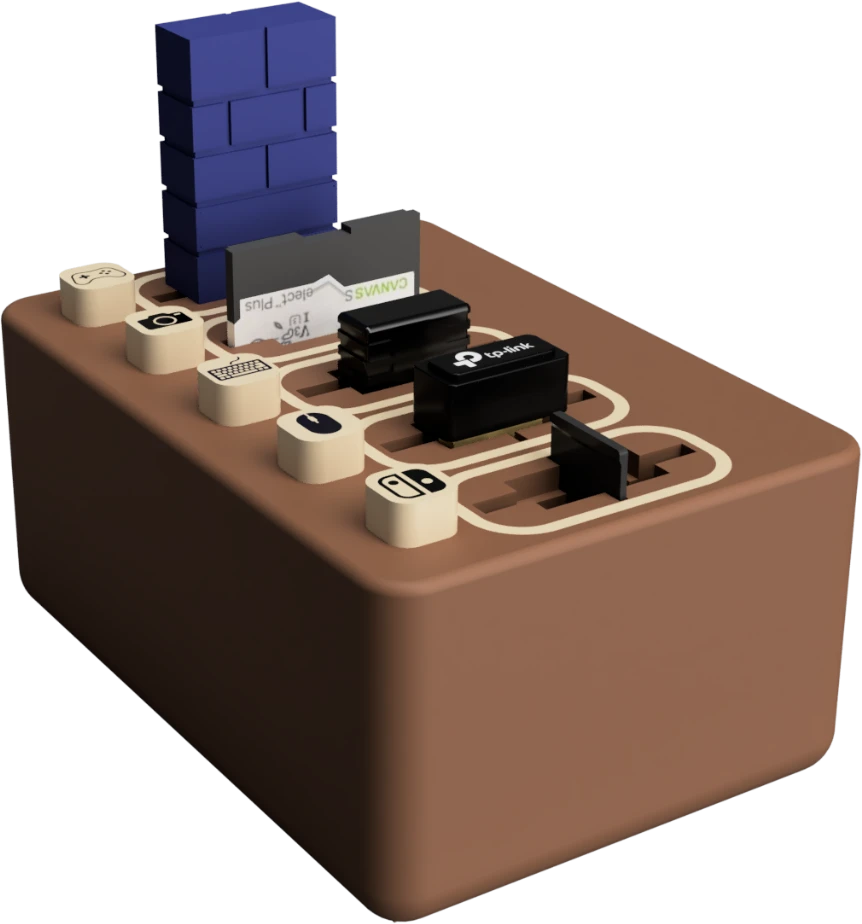
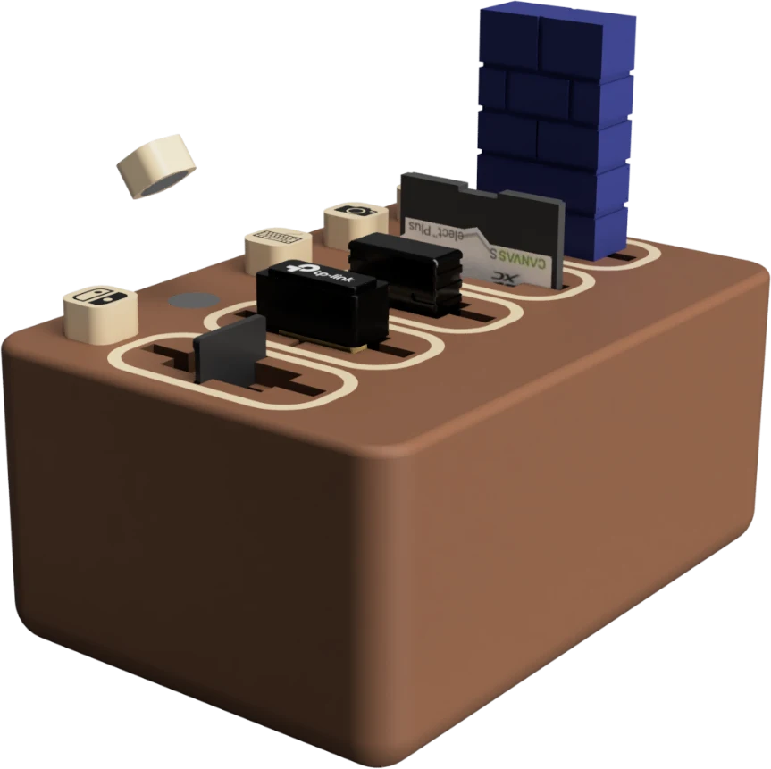
This lower-angle view shows the labels seated beside their slots.
03 / Prototyping
From sketches and cardboard to five slots.
I used cardboard to explore the footprint and push interaction. The hexagonal print let me try the layout and labeling. Feedback pointed to a smaller footprint, smoother edges, and labels that users could change. I moved to a compact rectangular housing with five slots and used partial prints to check fit before printing the full housing.
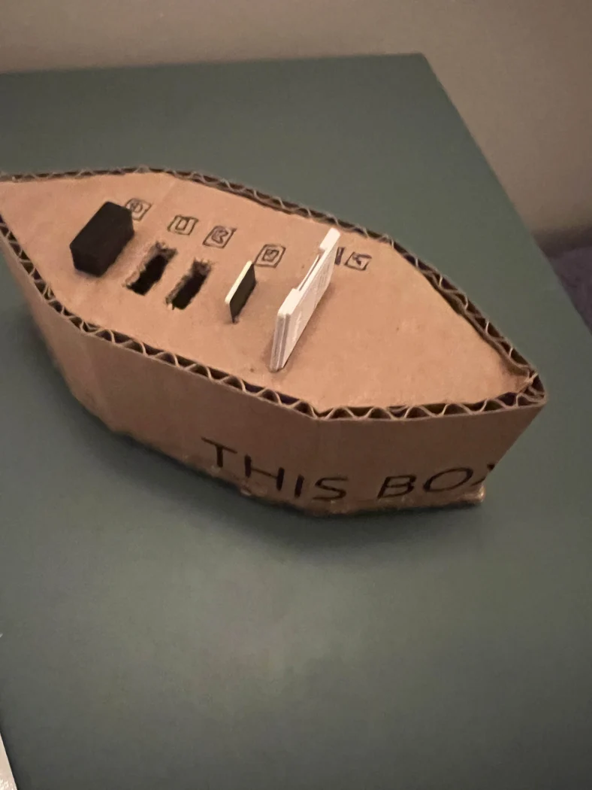
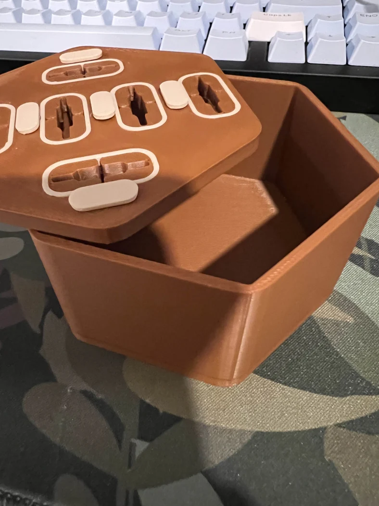
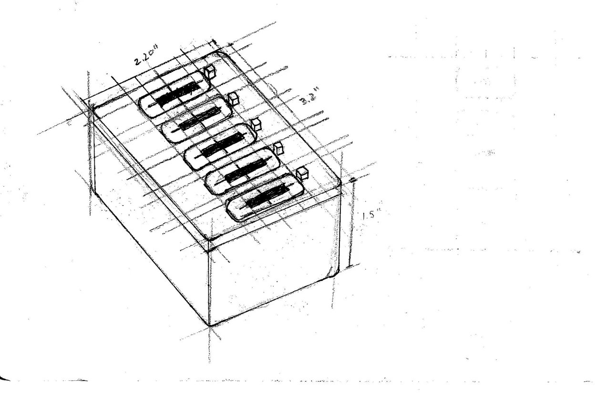
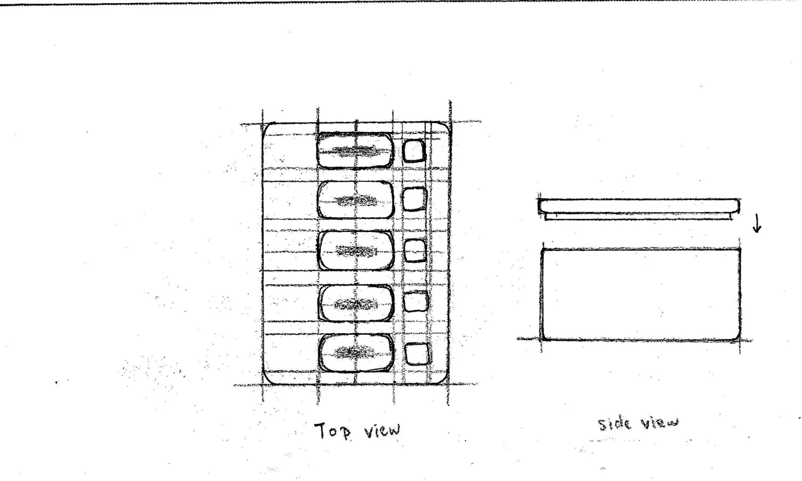
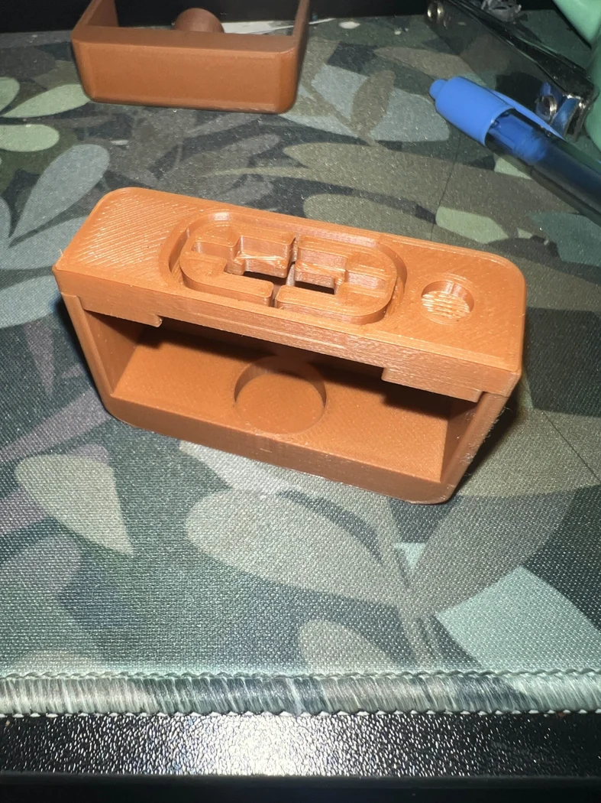
04 / What I learned
A satisfying click still needs a secure hold.
I compared sourced clickers for size, feel, and how their springs behaved. One was too large, a printed spring deformed, and another clicked with a scratchy sound. I chose a smaller option with a metal spring. It gave the tactile feedback I wanted, but the clicker did not grip the item when the organizer was inverted.
Mechanism credit: Mini Clicky McClickerson, MakerWorld remix by DaddyWazzy_TheCreator (Creative Commons Attribution).
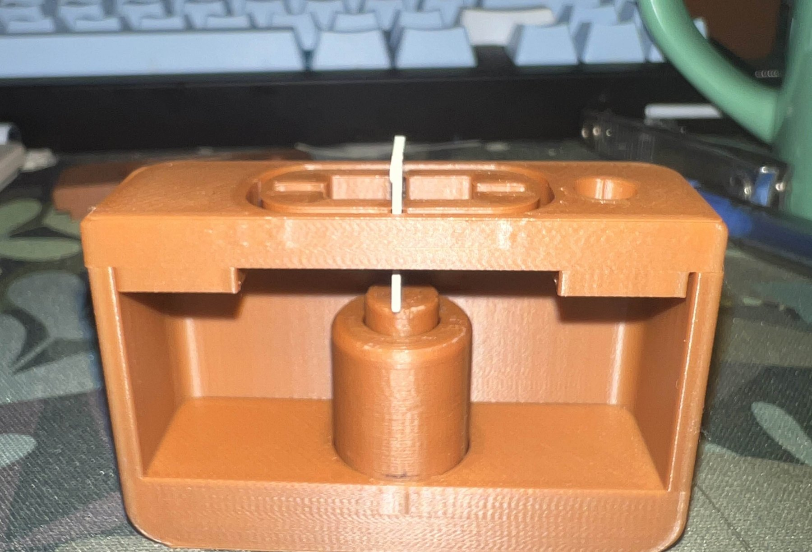
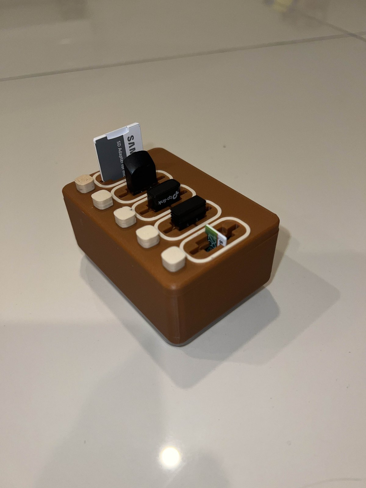
Fusion renders
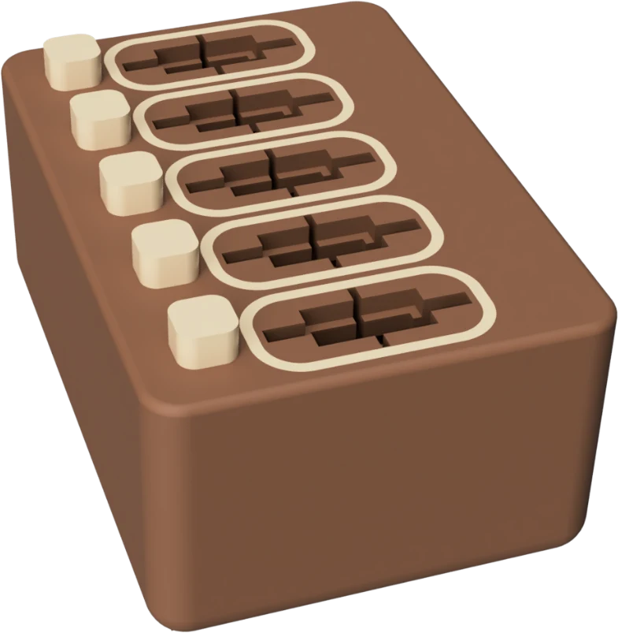
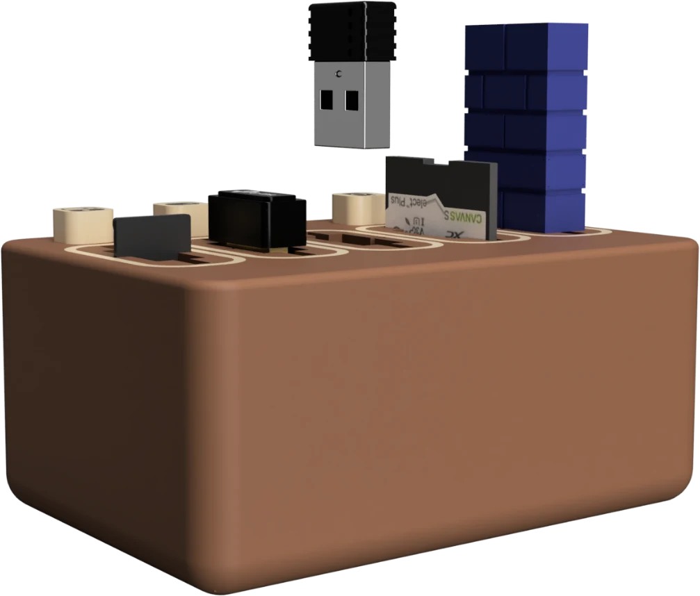
05 / Showcase